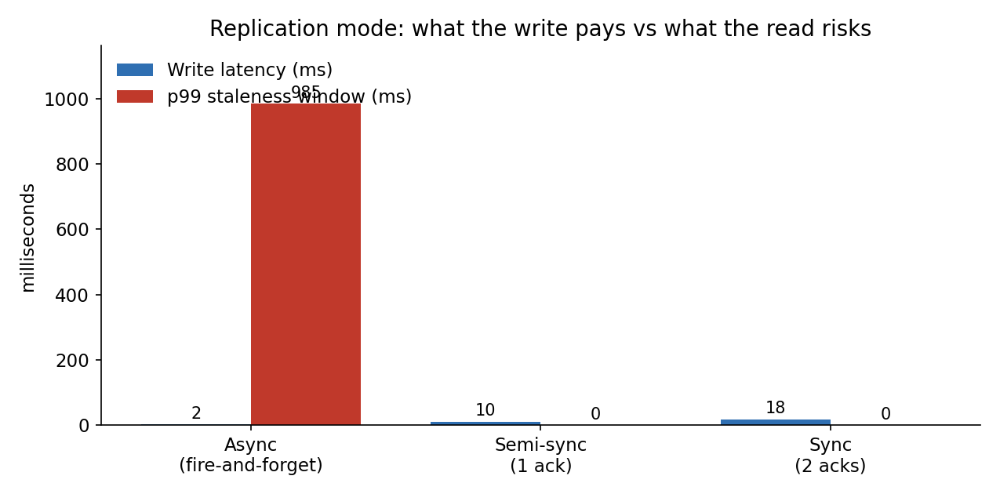
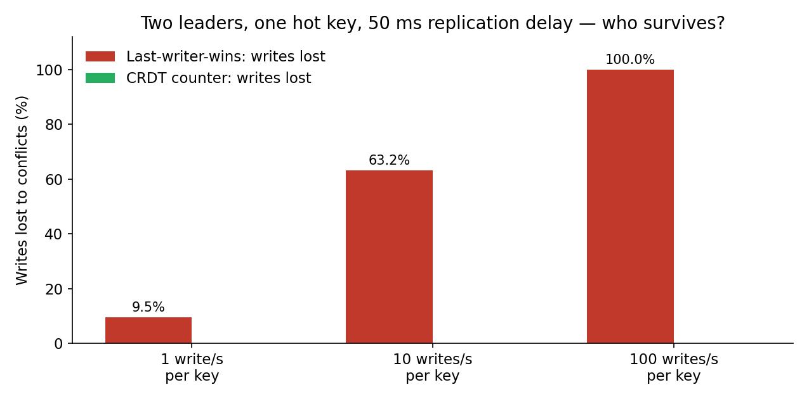
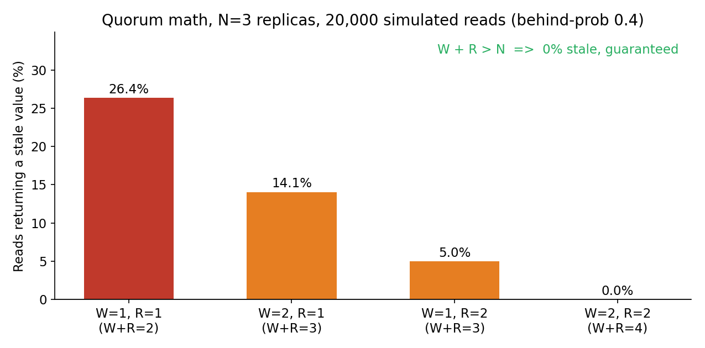
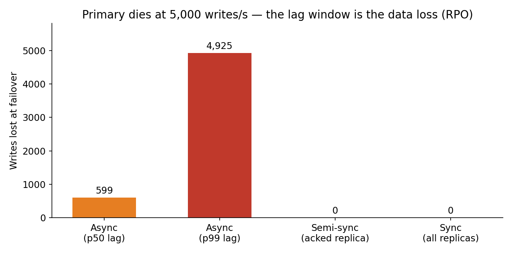

At 3 AM on a Thursday, an on-call engineer watched a database failover complete in 41 seconds — clean promotion, new primary accepting writes, dashboards green, pager quiet. By 9 AM, support had 600 tickets. Six hundred users had changed their passwords, seen "password updated," and then been locked out — because the failover had promoted a replica that was 120 milliseconds behind, and those 600 password changes had never arrived. The failover worked exactly as designed. The design was the problem: it had promised high availability and delivered it, at the price of the last 120 milliseconds of writes.
Six months later, the same team had the opposite incident. Two regions both accepted writes to the same shopping cart — one added a gift card, the other removed it — and the system resolved the conflict by keeping whichever write arrived last. The customer was charged for a gift card that no longer existed in the cart, and the order shipped without it. Nobody's code had a bug. Two leaders had written the same key at the same time, and "last writer wins" had picked a winner at random.
Both incidents have the same root cause. A database with one copy is a single point of failure; a database with three copies is three databases that disagree with each other for some fraction of every second. Replication is the discipline of deciding, in advance and on purpose, how much they are allowed to disagree — and what you lose when they do.
This is Part 8 of System Design, Plainly: one concept per post, evergreen, beginner-friendly, with the concrete numbers and the failure modes. Today: replication — the copies, the quorums, and what "three copies" actually guarantees when a server lies.
The ELI5 version
Imagine you keep your diary in one notebook. If the notebook burns, the diary is gone — so you keep three copies, in three different houses. Every time you write a page, a courier copies it to the other two houses. The question is: when do you consider the page written?
Option A — async. You finish writing, put the pen down, and tell yourself it's saved. The courier is still on the road. If your house burns in the next two minutes, the page is gone — it existed only in your house. Fast, and dishonest about durability.
Option B — semi-sync. You wait until the courier phones from one other house: "got it." Now the page exists in two houses. If yours burns, the copy survives — unless the courier's house burns at the same moment, which is much less likely.
Option C — sync. You wait until both other houses confirm. Now the page exists in three places before you call it written. Slowest, and the only option where a single house fire costs you nothing.
Our simulation makes the trade exact. With a 2 ms local commit and an 8 ms round trip to a replica, an async write returns in 2 ms but a read on a replica can be stale for 120 ms at the median and 985 ms at the 99th percentile; a semi-sync write costs 10 ms and is stale for 0 ms on the replica that acknowledged it; a fully sync write costs 18 ms and is stale for 0 ms everywhere. The price of certainty is measured in milliseconds — and the price of speed is measured in how stale your reads are allowed to be.

There is one more choice hiding inside the courier story: who is allowed to write. In the classic setup, one house is the leader and the other two are read-only followers — every write goes through the leader, and the followers exist to serve reads and to take over if the leader dies. That is the design of PostgreSQL streaming replication and MySQL's standard setup, and it is the default for a reason: one writer means no write conflicts, ever. The alternatives — several leaders, or no leader at all — buy availability and local write latency, and they pay for it in conflicts. The rest of this post is the price list.
How it works: leaders, quorums, and the merge problem
Leader/follower, and the lag window. The leader takes writes, appends them to a log (PostgreSQL's WAL, MySQL's binlog), and streams the log to followers, which replay it. A read served by a follower can be stale by however far behind the follower is — the replication lag. Under light load that is milliseconds; under a write burst, or while a follower replays a big transaction, it can be seconds. The lag is not a bug: it is the definition of async replication. If your product reads its own writes — change your password, then log in with the new one — the read must go to the leader, or to a follower that has caught up past your write. That guarantee has a name: read-your-writes consistency, and it is the first thing a good system design answer names, because it is the guarantee users actually feel break.
Synchronous, semi-sync, and the slowest replica. Synchronous replication makes the write wait for replica acknowledgment. The catch is that the write is now as slow as the slowest replica you wait for — one sick follower with a saturated disk drags every write in the system down with it. That is why almost nobody runs full sync to all replicas: the usual compromise is semi-sync (wait for one ack, usually the nearest replica) or sync to a quorum (wait for a majority). PostgreSQL's synchronous_commit = remote_apply and MySQL's semi-sync plugin (rpl_semi_sync, wait point AFTER_SYNC) are the two standard implementations, and both carry the same fine print: the ack means the write reached the replica's log, not that it has been applied — and if that one acked replica dies along with the leader, the write is still gone. Semi-sync buys zero loss on one replica, not zero loss in general.
Multi-leader: writes everywhere, conflicts included. Give two regions each a leader and let both accept writes, and you have cut write latency in half for a global user base — and introduced the conflict problem from the opening. Two writes to the same key, in flight at the same time, both "succeed," and the system must pick one outcome. The common resolutions, in order of honesty:
- Last-writer-wins (LWW). Keep the write with the later timestamp, drop the other. Simple, silent, and wrong whenever both writes mattered: the gift-card incident above is LWW doing its job. DynamoDB Global Tables replicate this way — async, multi-region, last writer wins — and AWS documents it plainly.
- First-writer-wins / detect and reject. One transaction commits, the other gets a serialization failure and must retry. Aurora DSQL works this way: optimistic concurrency control validates at commit, and a conflicting transaction is rejected with PostgreSQL error
40001. Nobody's write is silently dropped — but somebody's write fails, and the application has to handle it. - Merge, don't choose. Make the data type itself handle concurrent writes: a counter that adds both increments, a set that unions both additions, a register that keeps both values and asks the application. These are CRDTs (conflict-free replicated data types), and they are the only resolution where no write is ever lost.
Our simulation measures the cost of the lazy option. With a 50 ms replication delay between two leaders, a hot key written at 1 write per second loses 9.5% of writes under last-writer-wins; at 10 writes per second it loses 63.2%; at 100 per second it loses 100% — every write except the last one in each window. The CRDT counter loses 0.0% at every rate, because increments commute: +1 and +1 is +2 no matter which arrives first. The lesson is not "always use CRDTs" — most data can't be expressed as a counter — it is that multi-leader without a merge strategy is a data-loss machine whose loss rate grows with write contention, and the growth is exponential in the delay window.

Leaderless and quorums. Dynamo's 2007 answer removed the leader entirely: any node accepts any write, the write goes to N replicas (usually 3), and a read asks R replicas while a write waits for W acknowledgments. The rule that makes it work is one line of arithmetic: W + R > N. If the write set and the read set overlap on at least one node, the read sees the latest write. In our simulation with N=3 and a 40% chance that a replica is behind on a given read, the stale-read rates are exact and unforgiving: W=1, R=1 → 26.4% stale; W=2, R=1 → 14.1%; W=1, R=2 → 5.0%; W=2, R=2 → 0.0%. Only the last one satisfies W + R > N, and only the last one is zero. Note the asymmetry: raising W (write to more replicas) and raising R (read from more replicas) both help, but neither alone reaches zero — and both cost latency on every operation. Quorums are not a way to get consistency for free. They are a way to buy it, per operation, with latency, and the price is visible in the table.

Consensus: who is the leader, anyway? Everything above assumes the system agrees on who the leader is. When the leader dies, the followers must elect a new one — and the election itself must not produce two leaders. That is the consensus problem, and the standard answer is Raft (or Paxos): a majority of nodes vote, the winner gets a term number, and a stale leader with an old term number cannot commit anything. CockroachDB, TiKV, and etcd all run Raft underneath. The key fact for an interview: consensus needs a majority, so a 3-node cluster survives 1 failure, a 5-node cluster survives 2, and a 2-node cluster survives none — with two nodes, losing one leaves no majority, so the survivor stops accepting writes rather than risk a split brain. Two nodes is not high availability. It is a single point of failure with extra steps.
The state of the art: the 2026 landscape
PostgreSQL 18 (September 25, 2025) closed several of logical replication's oldest gaps: DDL now replicates (schema changes propagate, not just row changes), parallel streaming of large transactions is the default, generated columns can replicate, conflicts are counted per-type in pg_stat_subscription_stats, and idle replication slots can be invalidated automatically instead of silently retaining WAL until the disk fills. PostgreSQL 19, in release candidate since October 15, 2026 with GA planned November 19, 2026, closes the next one: sequence values replicate, and a new WAIT command gives clients read-your-writes on standbys. The direction of travel is clear — logical replication is becoming the way you move a live database, not just the way you copy one.
MySQL remains the semi-sync workhorse: GTID-based replication, semi-sync with the AFTER_SYNC wait point, and Group Replication for multi-primary clusters with conflict detection. The operational reality is the same as Postgres: async by default, semi-sync when a write matters, and lag monitored as a first-class metric.
Aurora DSQL (GA May 27, 2025) is the newest shape of the answer: serverless, PostgreSQL-compatible, multi-region active-active with strong consistency — two peer regions both accept writes, a third region acts as witness for quorum, and optimistic concurrency control rejects conflicting transactions with a 40001 instead of silently dropping one. The cost is the speed of light: third-party measurements put cross-region writes at 85–150 ms, against single-digit-millisecond local reads. Multi-region clusters reached 16 regions in July 2026, and change-data-capture streaming to Kinesis went GA the same month. DSQL is what "sync replication across regions" looks like when a cloud vendor absorbs the complexity — and the 85–150 ms write latency is the price tag, printed on the box.
Spanner and CockroachDB are the consensus-native alternatives: Spanner orders commits with TrueTime (GPS + atomic clocks bounding clock uncertainty, then waiting it out) for external consistency across the planet; CockroachDB runs Raft per range, multi-active by default, with serializable isolation. Both make the same trade DSQL makes — strong consistency, global writes, latency bounded by physics — with different machinery underneath.
The pattern across all four: the industry has converged on strong consistency with a latency price, after a decade of eventual consistency being the default. The price is honest now — 85–150 ms cross-region, or a quorum wait on every write — and systems print it instead of hiding it.
Why it breaks: the four failure modes
1. The lag window eats your failover. Async replication's data loss at failover is exactly the lag at the moment the primary dies. In our simulation at 5,000 writes per second, promoting a replica loses 599 writes at the median and 4,925 at p99 — the writes that were committed on the primary but had not yet reached the replica. Semi-sync and sync lose zero, because the acked write is already on the surviving replica. This is the number that decides your replication mode, and it has a name: RPO, recovery point objective. If your RPO is zero, async is not an option, full stop — no amount of monitoring makes an async replica contain writes it never received.

2. Split brain: two leaders, one dataset. A network partition cuts the leader off from the followers; the followers elect a new leader and keep serving writes; the old leader, still alive and still reachable by some clients, keeps serving writes too. When the partition heals, two histories must become one — and for a single-leader system, they can't. The defenses are fencing (the old leader's term number is stale, so its writes are rejected), quorum (a leader needs a majority to commit, so the minority side stops), and STONITH — "shoot the other node in the head" — actually killing the old leader before promoting the new one. Every production failover system has at least one of these, because the alternative is two primaries writing to the same rows and a dataset that can never be reconciled.
3. The silent conflict. Multi-leader's failure mode is not an error — it is a wrong answer delivered with a success code. Last-writer-wins drops writes without telling anyone: no error, no retry, no log line unless you built one. The 63.2% loss at 10 writes per second from the simulation above is not a crash. It is the system working as designed, deleting the majority of concurrent writes to a hot key. The mitigation is to choose the resolution per data type before launch — counters as CRDTs, money as first-writer-wins with a retry, and never, ever LWW on anything a customer paid for.
4. The replica that lies. A replica can be up, replicating, and wrong: a bug in the apply path, a torn write, a disk that returns stale pages, a logical replication conflict that was skipped instead of fixed. The primary says the balance is $100; the replica says $80; both insist they are healthy. This is why serious systems checksum (PostgreSQL's data_checksums, MySQL's innodb_checksum_algorithm), compare (pt-table-checksum, or a periodic reconciliation job), and never treat "replica is up" as "replica is correct." And it is why the lag metric alone is not enough: lag measures distance, not correctness. A replica 0 ms behind with a corrupted page is worse than a replica 10 seconds behind and intact.
One more, for the interview: replication is not a backup. Replicas copy your mistakes in real time — a dropped table, a bad migration, a DELETE without a WHERE replicates to every copy within milliseconds. The thing that saves you from those is a backup with a point-in-time restore, not a third replica. Say it unprompted; it is the sentence that separates the candidate who has run a database from the candidate who has only read about one.
The interview angle
"Design a globally distributed database" is the question this post is really about, and the grading rubric is almost entirely the tradeoff table above. The answer that passes:
- Start with the consistency requirement, not the product. Ask what the RPO is. Zero means sync or quorum; seconds means async is fine. Name the number before naming the database.
- Pick the write model by the workload. Single region, one writer: leader/follower, async with semi-sync for the writes that matter. Global writes: multi-leader with a named conflict resolution per data type, or a consensus-native store (Spanner/CockroachDB/DSQL) with the 85–150 ms cross-region price stated out loud.
- Write the quorum on the whiteboard. N=3, W=2, R=2, W + R > N, 0% stale — and the cost: every write waits for two acks, every read asks two replicas. The 26.4% stale rate at W=1, R=1 is the number that ends the "but we read from replicas for speed" argument.
- Name the failure modes unprompted: the lag window at failover (599 writes at p50 in our sim), split brain and fencing, silent LWW conflicts (63.2% at 10 writes/s), and the lying replica — lag is distance, not correctness.
- Close with the backup line: replication copies your mistakes in real time. A replica is availability, not durability. Durability is a backup.
Takeaways
- Async is fast and dishonest. 2 ms writes, but reads can be ~1 second stale at p99, and a dead primary takes ~600 writes with it at 5,000 writes/s. The lag window is the data loss.
- Quorums are arithmetic. W + R > N is the only setting with a 0% stale-read rate — 26.4% stale at W=1, R=1 with N=3, 0.0% at W=2, R=2. Everything else is a measured probability, not a guarantee.
- Multi-leader is a conflict machine. Last-writer-wins silently drops 63.2% of writes to a hot key at 10 writes/s with a 50 ms delay. If both sides must write the same key, the data type has to merge — that is what CRDTs are for.
- Semi-sync is the middle most systems run. One ack costs 8 ms and buys zero loss on the acked replica; full sync doubles it and buys zero loss everywhere. The slowest replica you wait for sets your write latency.
- Replication is not a backup. Replicas copy your mistakes in real time. Availability is three copies; durability is a backup with a point-in-time restore.
Follow for the next part: Part 9 is Database Indexes — the B-tree, the LSM-tree, and why the same query is 1 ms on one and 10 seconds on the other. If this series is useful, the follow button on the dev.to profile is where the next part lands first.
Honesty note: the 2/10/18 ms write latencies, the 120/985 ms staleness window, the quorum stale rates (26.4% / 14.1% / 5.0% / 0.0%), the LWW loss rates (9.5% / 63.2% / 100%), and the failover loss figures (599 / 4,925 writes) are simulations run on this machine (companion notebook) — real measurements of toy models, not production telemetry. The Dynamo 2007 (N=3, W+R>N) and Raft facts are from the papers/systems; PostgreSQL 18's DDL replication, parallel streaming default, and conflict counters are from the 18 release notes and AWS's RDS write-up; PostgreSQL 19's sequence replication and WAIT command are from the release-candidate notes (GA planned Nov 19, 2026); Aurora DSQL's GA date, 99.999% multi-region availability, OCC/40001 behavior, and 16-region coverage are AWS's own claims, while the 85–150 ms cross-region write latency is a third-party measurement, flagged as such. No Meta content, per the standing exclusion.